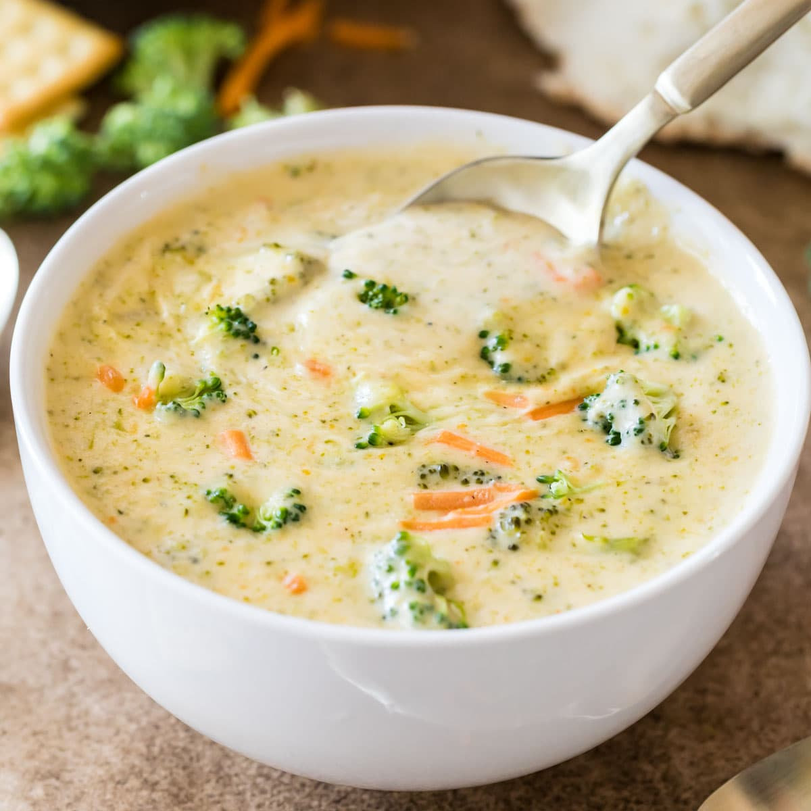

Home
Cheese soup with broccoli

Description
Cheese soup with broccoli, often called broccoli cheddar soup, is a velvety comfort dish featuring tender broccoli florets simmered in a rich base of melted sharp cheddar cheese, thickened with a butter-flour roux and creamy elements like milk, half-and-half, or heavy cream. Subtle sweetness from julienned carrots and savory notes from onions, garlic, and celery enhance the bold cheese flavor, while seasonings such as nutmeg, Dijon mustard, or black pepper add depth without overpowering the fresh broccoli's earthiness.
Ready in about 30 minutes, this hearty soup blends smoothness from partial pureeing with chunks of broccoli for texture, making it ideal for cold days or quick meals. It's commonly garnished with extra shredded cheese or served alongside crusty bread, and variations use vegetable broth for a lighter version or potatoes for added heartiness.
Ingredients
- 1 onion, chopped
- 6 tablespoons margarine
- ⅓ cup all-purpose flour
- salt and pepper to taste
- 4 cups milk
- 3 cups chicken broth
- 1 carrot, shredded
- 1 cup broccoli florets
- ½ cup chopped celery
- 1 pound processed cheese food (eg. Velveeta), cubed
Steps
- In a large saucepan on medium high heat, saute the onions in the butter or margarine until tender. Add the flour and salt and pepper to taste. Mix until smooth. Add the milk slowly, until mixture is thick and bubbling.
- In a smaller saucepan, bring the chicken broth to a boil. Add the carrot, celery, and broccoli. Cook about 5 minutes, or until tender. Combine the broth mixture with the milk mixture and stir until fully blended.
- Add the cheese. Allow soup to heat over medium heat until cheese is melted. Important: DO NOT let the soup boil because the cheese will separate and curdle the soup. Serve hot and enjoy!